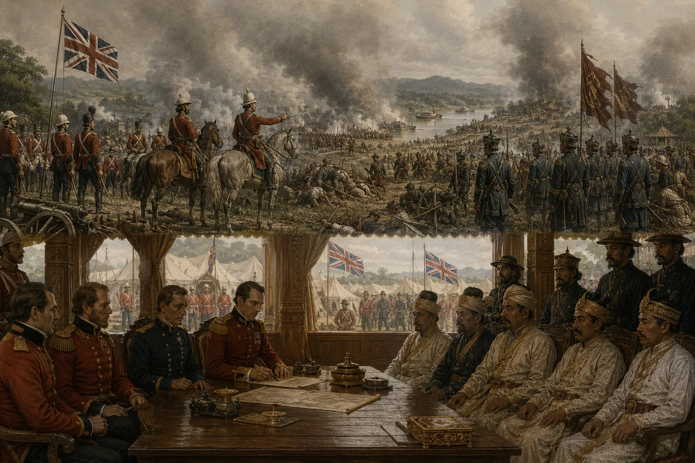

Outbreak of the First Anglo-Burmese War in Assam
1824–1826 · The days of the Burmese

British East India Company declares war on Burma; British regiments and gunboats advance up the Brahmaputra, expelling Burmese forces.
Sources have not yet been catalogued for this record.
People: Sir Archibald Campbell, David Scott, Jogeswar Singha
Open this scene in the interactive archive · Follow this event on MAP